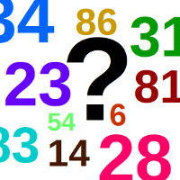

Get Best Project Ideas for Placements and Interviews.
Here Are Some Common And Basic Projects on Any Field :
projects
Digital Calculator
Make digital calculator on any programming languages (i.e- Java , Python , C , C# , C++)
as well as in website using any resources ( i.e- HTML , CSS, Javascript , React , Python ,
Php , etc. ) and
with a beautiful forntend because frontend the thing which will make the
impression on the user of your website because
"First Impression Is The Last Impression....".
Rock Paper Scissor Game
Make a popular game 'Rock Paper Scissor' which we played in our
childhood using programming languages and web development skills.
In programming lanuages like Java , Python , C you can take input as 'Press 1 for Rock '.
Points to be noted :
i.There will be 10 round of game.
ii.The palyer which will win the most round will win the match.
iii.Same or Equal play of the user and computer will be a 'Draw round'.

Number Guessing Game
Make a number guessing game using any of the programming languages.A
random number will be guessed by the software and the palyer has to guess the number
and if the guessing is not correct the software will give hint like 'Guessing is very'
if the number guessed by the player is more than the correct number.
Points to be noted :
i.There will be 10 (ten) oppurtunity for the user to guess the correct numnber.
ii.If the oppurtunity are over then payer will lose the game.
iii.Comment on user's answer is optional.
Online Music Player
Make a online music player , were song are avaliable of all types and languages.
The user could download his/her favourite songs and can also make a playlist of his
own.
Points to be noted :
i.Free of cost.
ii.Making own playlist feature is optional.
iii.Downloading feature is necessary for web developer only.